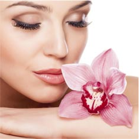
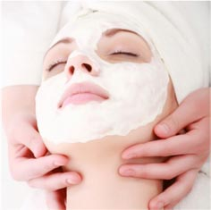

1
先天敏感肌肤
天生易敏肌肤，皮肤薄容易受到环境刺激或者过敏因子的刺激造成肌肤的过敏和敏感年龄增长，皮肤在岁月的消磨下，会变得较薄，它的保护层功能亦随之减弱。
2
极端环境因素
皮肤长期处于极冷或极热的气温下，暴露在阳光或空气污染的环境中，烟尘、紫外光、红外线等均会损害皮肤，因其产生的活性氧游离子能破坏皮肤脂质保护层，让皮肤失去天然屏障，易致敏感。
3
生理与情绪因素
生理因素、精神紧张和情绪低落，都会减弱皮肤的天然抵抗力，引致它的自我修护机能亦随之减慢。如内分泌紊乱、长期使用不当化妆品或不当护符方式，都会伤害皮肤的保护层及正常代谢。

4
不正确的护理
频繁使用面膜类产品，过度清洁，曾用过含有激素类的产品，过度去角质等狐狸，都会造成皮肤屏障功能的破坏，皮肤过薄容易出现红血丝，皮肤容易敏感甚至出现过敏现象。
5
皮肤炎症病史
本身患有皮肤疾病，比正常肤质更易出问题。曾有过严重晒伤、接触性皮肤炎的病史，皮肤防御功能低下，也会导致皮肤在使用化妆保养品时就会容易出现敏感或是过敏现象。